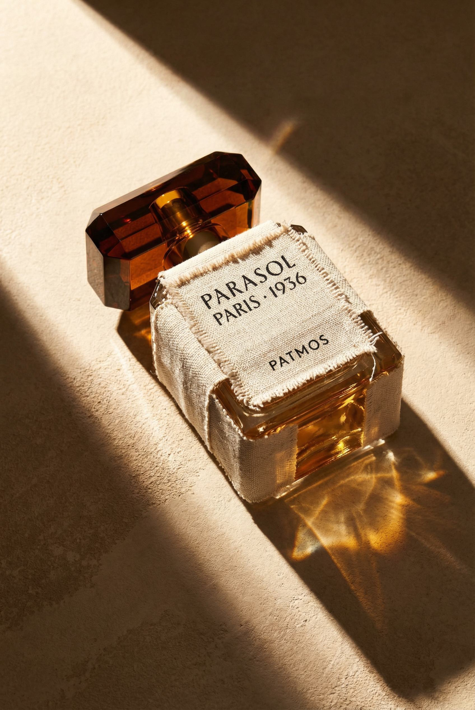
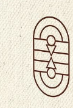

A homepage that behaves like a summer you almost remember.
The page is an album of summer moments in the house's aesthetic — texture, light, salt on skin, beautiful objects. Each image sits inside its own frame, the frames suspended over one continuous surface: sand, raw cotton, sun-bleached linen. Nothing is staged. Everything feels found.
The cursor stirs the surface — a soft distortion of the background, or a house motif that trails the hand.
On scroll, certain frames come alive: a still turns to film, a tune drifts up, a line of the house's story surfaces.
The texture beneath stays constant — motion reads like weather moving across one surface, not effects switching on and off.
One frame is left empty. Visitors place their own photograph inside it for the chance to receive one of the first bottles. To save the frame and share the page, they leave an email — and, given the value of the prize, a little more.
We don't talk about the perfume. We hand you the summer it came from.
Rooted in the house's travelling DNA, the homepage opens our address book — brief, hand-picked guides to the places that shaped the brand: Pantelleria, Portofino, Antiparos. Built entirely from the under-the-radar: the hotel with no sign, the restaurant you have to be told about, the vineyard that opens its door if you call ahead, the beach no map marks.
No Michelin stars. No obvious anything. Ten to twenty addresses per destination, chosen the way you'd tell a close friend — quietly. Between the addresses we weave the stories that made each place matter to the house.
"Remember that restaurant on the mountain in A Bigger Splash? Like that."
Any guide can be sent to the visitor's inbox as a beautifully made PDF — in exchange for an email, and a note that they'd like to know when the first fragrance launches.
A homepage you fall into.
The most purely visual of the four. The page is built from layered screens — blocks of image, text and texture that part, expand or drift away as you scroll, each revealing the layer beneath. Together they tell the story behind the house: where it comes from, what moves it, and the first hints of how the fragrance will look and feel.
Something like a slow vortex, each scroll pulling the visitor further in. A designer's experience, carried by image and upscale copy rather than information.
One thread for the narrative: quiet-luxury summer through cinema, art and — perhaps — music. We never use protected work directly, only visuals inspired by.
The final screen is the product itself, where the inspirations crystallise into the bottle — beside a single invitation.

The house's founding idea, made playable.
An audiovisual installation more than a page, and the most product-forward of the four. The homepage opens almost blank. As the visitor taps across it, colour and sound bloom under the finger and hidden things surface — images, films, a melody, fragments of text. A gentle game, and a small mystery to solve.
Tapping is the whole pleasure — colour and sound bloom under the finger. A single tap reveals only part of an image, a film, a melody or a line of text, and it slowly fades again.
Find the sweet spot at its centre and the piece stays. One by one you uncover the whole experience, like a puzzle — and the order doesn't matter.

This concept turns the house's own principle — the art of disappearance — into the way the site behaves. Meaning is never handed over; it is found. The email arrives naturally at the end of the game: to keep what you've uncovered, and to be told when the collection appears.